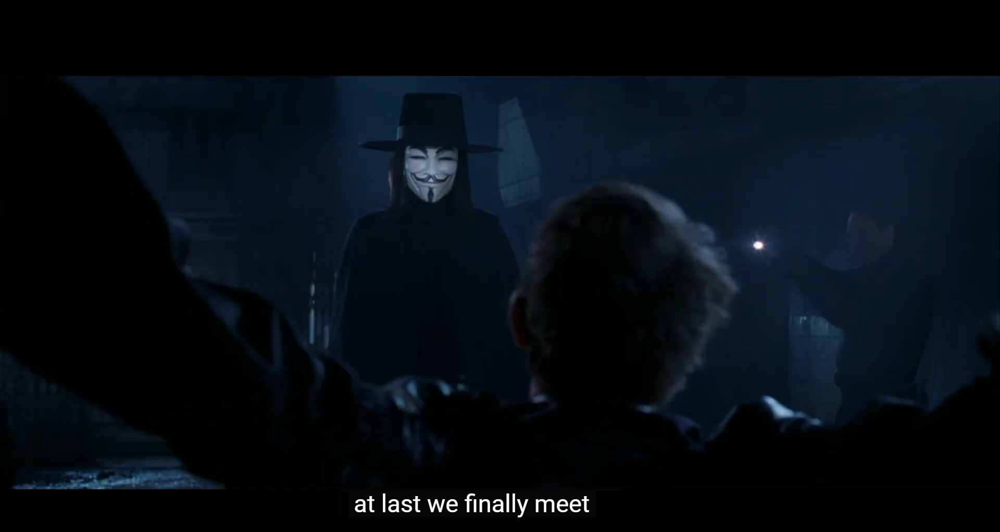
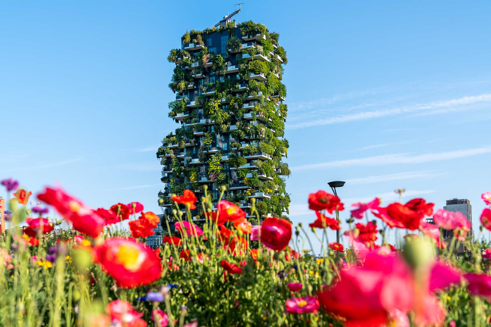
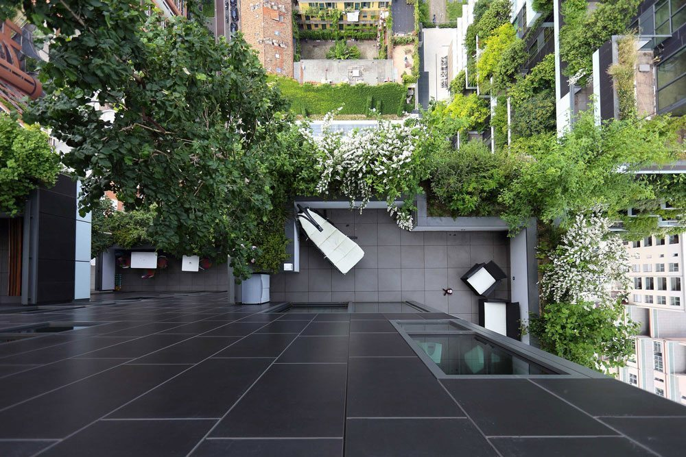

8 Week 8 Temperature
8.1 Summary

Wow it is quite a long journey(for sure)!! At last, I almost finish this learning diary. Right now I’m just listening Feel So Good by Seiji Igusa(one more my favorite guitarist) to write this last chapter.

Alright let’s go back to topic once again. So this week we had a number of discussion around temperature and discussed its causes and related policies.
8.1.1 Urban heat island
The definition of urban heat island is there is a temperature differences between urban and rural area. In summer, this effect will amplifies high temperature heat waves, which means that when encountering high temperature weather, the temperature difference will be higher as well.
Urban heat island is caused by crowded pavements, buildings covering natural land. This effect will cost a large amount of energy cost, pollution(US EPA 2015). And SVF(sky view factor), air speed, cloud play important role on this as well.

Basically, not only will urban heat island effect has strong impact on our society, but also it bring negative effect on environment. For example, due to heatwave, there are more than 2800 people whose age are more than 65 died in England, which is hightest excess death toll at least two decades(Goodier and Carrington 2022). And of course, with the increase of growing temperature, there is denying that the consumption of fuel, electricity will grow as well.
8.2 Application
So basic on above circumstance, what should we do to face up such a challenge? Different metropolitans and cities take some actions.
For instance, in Barcelona, the local government use “super block” aiming to mitigate such a effect. To be specific, the local government separate pedestrian and vehicular traffic to create green streets and bring more space for pedestrians and bicycles and minimize area used by cars(Okumus 2022).
In Milan, instead of trying to provide extra green space on the ground, the architects in Italy decide to bring more green space in the vertical direction, in this case, they design a vertical forest in the city(Stefano Boeri Architect 2022). Unlike glass or stone, plants won’t reflect or magnify radiation from sun, on the contrary, they filter it and create a microclimate.
It is a quite good attempt, especially the project doesn’t have high demand of land, because all green space are at vertical direction, which means compared to apply superblock to other cities, This project is much easier to be applied.


Former U.S. Secretary of Energy Steven Chu came up with some suggestion as well. In his opinion, it would be useful to addressing global warming and high temperature by painting rooftop and cars. White roofs can reduce a building’s electricity bill by 10% to 20%, says the Department of Energy(Hargreaves 2009). But this project doesn’t get to the root of the problem, i.e., it doesn’t systematically reduce air temperature.
8.3 Reflection
This is the final week’s diary. I do love this week’s topic. Not only is it a hot topic related to everyone’s life, but also I learned about the different solutions to mitigate temperature issue, which I never think about before. These methodologies bring me different way of thinking.